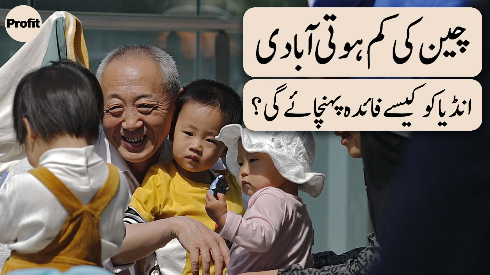

India's Population Crosses That of China: What Does It Mean?
Image Credits https://profit.pakistantoday.com.pk/2023/06/10/indias-population-crosses-that-of-china-what-does-that-mean/

In the year 2027, India is expected to surpass China in terms of population, becoming the most populous country in the world.
For decades, China has held the title of the most populous country in the world, with a population of over 1.4 billion people. However, a recent report by the United Nations Population Division suggests that India's population has now surged ahead, with an estimated population of 1.37 billion people.
This development has significant implications for both India and China, as well as for the global economy and geopolitical landscape. Let's take a closer look at what it means.
Case Study: India's Demographics and the Economy
India has experienced rapid population growth over the past few decades, thanks in part to improved healthcare and sanitation, as well as a decline in fertility rates in other parts of the world. While this growth has brought challenges such as overcrowding and strain on resources, it has also presented opportunities for economic growth.
With a young and growing workforce, India has the potential to become a major player in the global economy. However, this will require investment in education and infrastructure, as well as policies that promote innovation and entrepreneurship.
One of the key advantages of India's demographics is the abundance of talent in tech and engineering fields, which has led to the rise of startups and tech giants such as Infosys and Tata Consultancy Services. These companies have leveraged India's population to create a competitive advantage, by offering lower labor costs and a deep talent pool.
Case Study: China's Aging Population and the One-Child Policy
While India's demographics are a source of strength, China's aging population has become a liability. This is due in part to the country's one-child policy, which was in place from 1979 to 2015 and led to a decline in fertility rates. As a result, China's population is aging rapidly, with a shrinking workforce and rising healthcare costs.
To address this challenge, the Chinese government has relaxed the one-child policy and announced plans to encourage families to have more children. However, it may take decades to see the full impact of these changes.
Another challenge for China is the rising cost of labor, which has eroded the country's competitive advantage in manufacturing. This has led some companies to move production to lower-cost countries such as Vietnam and Bangladesh. To stay competitive, China will need to shift toward higher-value manufacturing and services.
Conclusion
The fact that India's population has surpassed that of China is a significant development for both countries, and has implications for the global economy and geopolitical landscape. India's growing population presents opportunities for economic growth, while China's aging population underscores the need for reform and innovation.
As these two demographic giants continue on their respective paths, it will be interesting to see how they adapt to these changing circumstances and what impact they will have on the world.
References and Hashtags
- United Nations Population Division: World Population Prospects 2019
- BBC: China alone cannot save the world economy
- CNN Business: China is hitting the brakes on its grand plans for electric cars
Hashtags: #India #China #population #demographics #economy #growth
Category: Business/Economy
Curated by Team Akash.Mittal.Blog
Share on Twitter Share on LinkedIn